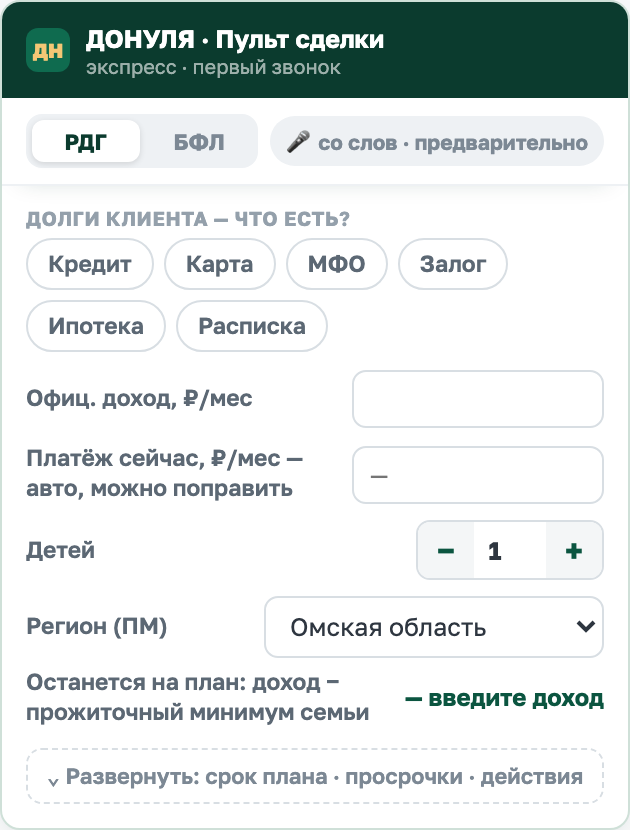
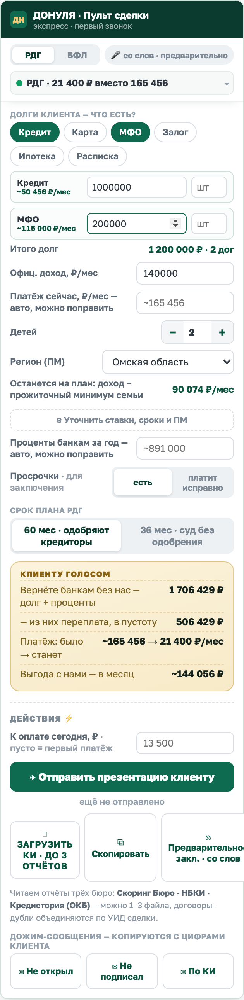
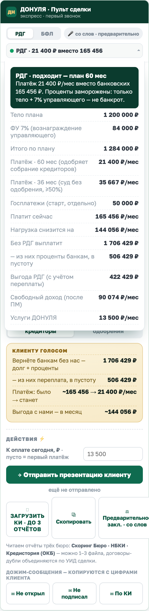
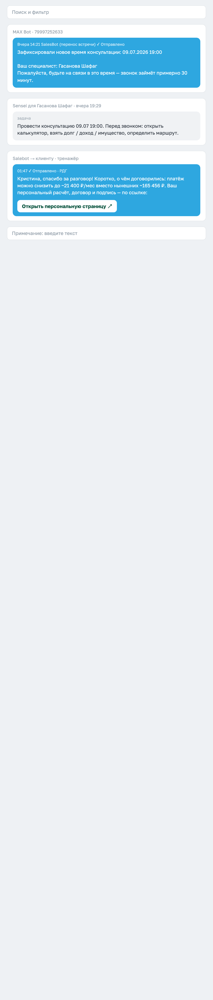
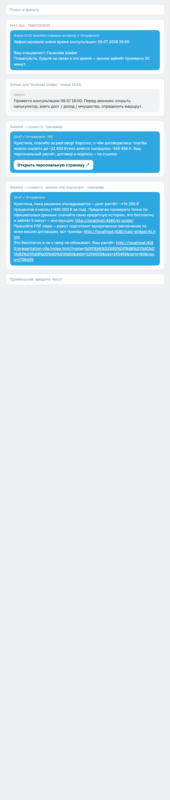
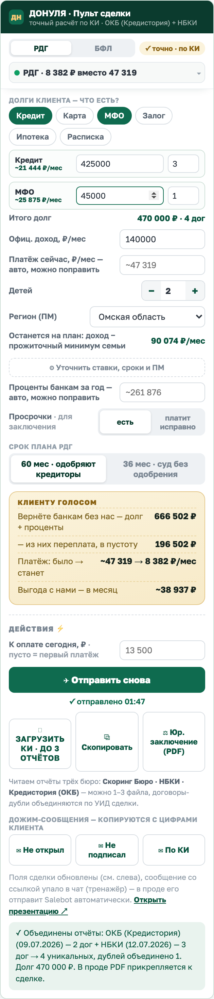
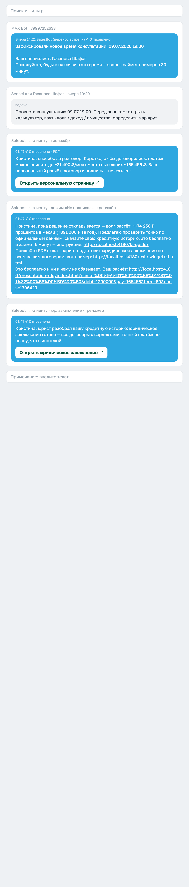
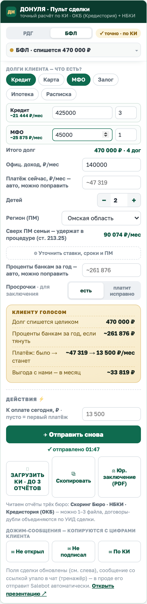

Виджет живёт в карточке сделки amoCRM справа. Ты вводишь цифры со слов клиента — он считает вердикт, готовит презентацию, дожимы и юр. заключение. Ниже — путь звонка по шагам и словарь кнопок. Данные на скриншотах вымышленные.
Открыть тренажёр и повторять по шагам ↗
Сверху тогл РДГ / БФЛ (обычно начинаем с РДГ — виджет сам скажет, если не тянет). Клиент рассказывает — ты записываешь агрегатами по типам, НЕ расписывая каждый договор: у клиента 5 кредитов на миллион и 10 займов на 300 тысяч → тап «Кредит»: сумма 1 000 000, шт 5; тап «МФО»: сумма 300 000, шт 10. Проценты и сроки подставляются средние по рынку — не трогай. Один договор — «шт» можно не заполнять.
Нижняя часть (срок плана, просрочки, действия) спрятана — раскроется сама после первой суммы, или тапни «⌄ Развернуть».

В шапке живой вердикт: «РДГ · 21 400 ₽ вместо 165 456» — он пересчитывается на каждый ввод. Ниже: «Итого долг», доход → «Останется на план» (допуск к РДГ), дети степпером, регион (подставляет прожиточный минимум).
«Платёж сейчас» считается сам по кредитам (при КИ — из отчёта), но поле открыто: клиент назвал точную цифру — впиши, весь расчёт перестроится. Подпись поля покажет источник: авто · из отчёта КИ · вручную.
Жёлтая карточка «Клиенту голосом» — четыре цифры, которые ты озвучиваешь по скрипту перед презентацией: вернёте банкам · переплата в пустоту · платёж было → станет · выгода в месяц.

Если клиент спрашивает «откуда цифры» — тапни строку вердикта в шапке: раскроется вся математика: тело плана, ФУ 7%, итого по плану, платежи на 60 и 36 месяцев, госплатежи 50 000 отдельно, переплата банкам, выгода, свободный доход, услуги 13 500.
Помни канон цены: голосом называешь «13 500 в месяц — потянете?», полную сумму (189 000 / VIP 169 000) — только на прямой вопрос.

Жми после согласия по цене (шаг 7 скрипта). Что происходит: 1) поля сделки слева заполняются (долг, тип услуги, платёж по плану); 2) клиенту в чат уходит сообщение с его цифрами и кнопкой «Открыть персональную страницу» — РДГ или Списание, по вердикту; 3) статус меняется на «✓ отправлено». Поменял цифры — «Отправить снова» обновит всё.
Ведёшь клиента по странице голосом до последнего экрана: договор → подпись СМС → оплата или частичка от 1 000 ₽.
Клиент готов не на всю сумму? Выторгуй частичку голосом («сколько можете внести сегодня?»), впиши её в поле «К оплате сегодня» (от 1 000 ₽) и отправь снова — экран оплаты попросит ровно эту сумму и покажет остаток по графику. Клиент видит одну сумму как факт, а не меню на выбор.

Каждая кнопка собирает готовое сообщение с цифрами этого клиента, кладёт его в чат и копирует в буфер:
✉ Не открыл — резюме звонка + персональная ссылка (касание Д0).
✉ Не подписал — рост долга в месяц + обмен «КИ за 5 минут ↔ бесплатное юр. заключение» + пример.
✉ По КИ — работает после загрузки КИ: разбор заключения, договор и оплата.

Когда просим КИ: на дожимах. Первый звонок идёт целиком со слов, а запрос отчёта — официальная фишка-повод позвонить или написать клиенту ещё раз: «скачайте свой отчёт за 5 минут — юрист бесплатно подготовит юридическое заключение». Прислал PDF — грузи сюда, заключение уйдёт ему в чат (шаг 7).
Виджет читает три бюро: Скоринг Бюро, НБКИ, Кредистория (ОКБ), можно 1–3 файла сразу или по одному. Отчёты склеиваются: договоры-дубли объединяются по УИД сделки, тост показывает состав («2 отчёта → 6 уникальных, дублей 2»).
После загрузки: точные тела ложатся в типы, бейдж «точно · по КИ», платёж сейчас — из отчёта, просрочки ставятся сами. Правишь цифры руками — честный откат на «со слов».

Как только КИ разобрана, в чат уходит сообщение «юрист разобрал вашу кредитную историю» с кнопкой «Открыть юридическое заключение». Внутри — все кредиторы клиента с вердиктами, крупно «платёж: было → станет», сценарии и цена.
Канон: КИ пришла = всё бросаем — открывай заключение и звони на разбор. Это самый сильный звонок воронки.

БФЛ считает списание целиком: «долг спишется», проценты за год «если тянуть», платёж → 13 500 за процедуру. Важно: если у клиента белый доход, виджет покажет предупреждение — всё сверх прожиточного минимума семьи ~6 месяцев процедуры уходит кредиторам (ст. 213.25) и «Выгоду с учётом удержаний». Большой белый доход → чаще выгоднее РДГ.